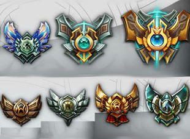
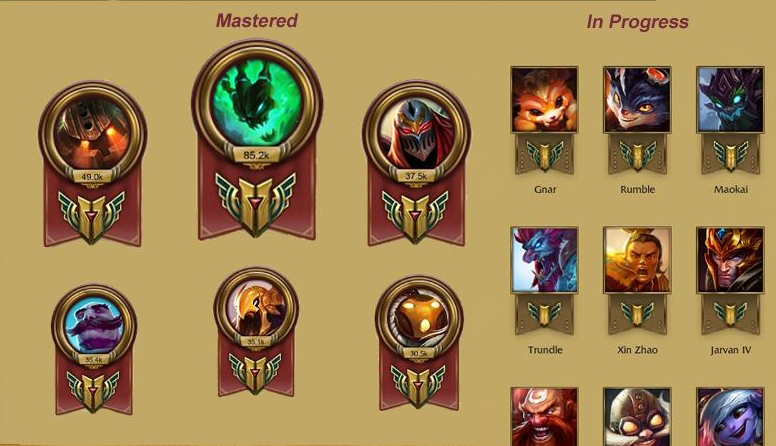
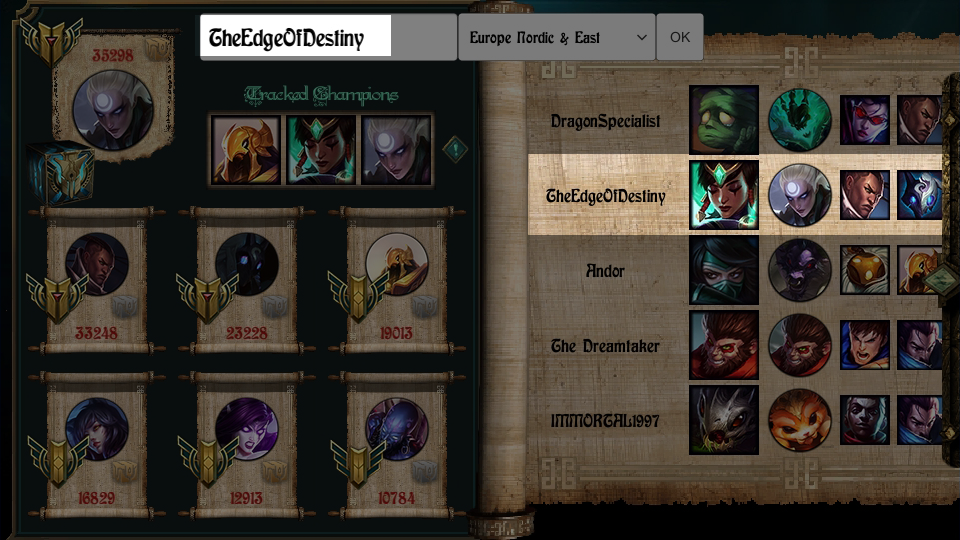
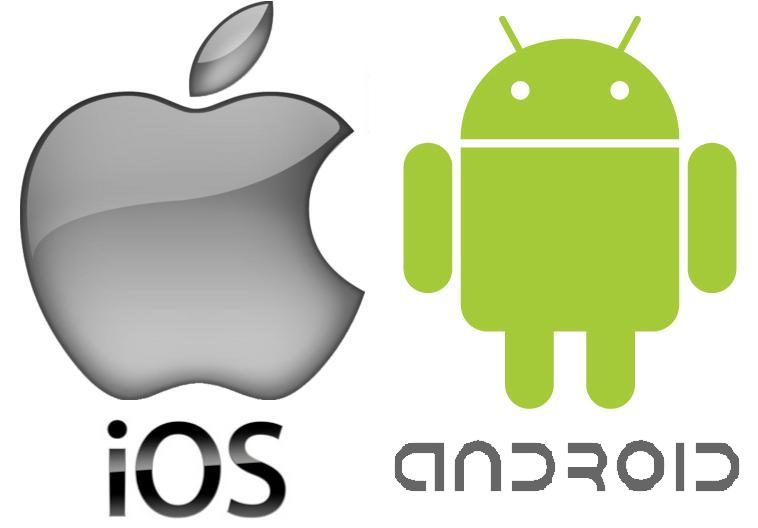
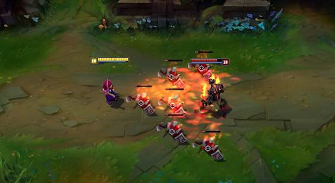

-

Summoner rank
Possibility to see Summoner's rank for currently selected summoner and for each player in game.
To give a little background on this. Personally I find pretty aggravating looking up Summoner's rank on web. Websites are slow, don't feel responsive and sometimes lack needed data.
op.gg for example shows last year rank for current game and you have to manually refresh your "Live" game. Or you need to navigate to Summoner page and in 90% of situations click "Refresh" and wait for data to be refreshed.
Despite the fact it is understandable why they implemented this in such way - I find this really inconvenient. -

Champion level in current game
Displaying champion level and possible score in current game.
Currently you cannot instantly see how good any of players are with their main champions. You need to load Summoner's data to see this.
Which is definitely inconvenient and needs to be updated. Maybe displaying mastery level with dots (as in current PVP.net client) and mastery score on hover. -

Current game - Show opponents on the left
A minor thing but pretty annoying is when opponents appear on the right and you need to expand panel to see their mastery.
Client separates teams by red/blue flag and not allies/opponents. So there is no way to say which team is allies and which opponents. You can determine this after data is loaded.
This update requires a bit of code rewriting therefore not shipped in vanila. -

Mobile support
It would be nice to be able to use app on mobile.
You wouldn't need to Alt+Tab to access it. And overall it can be more convenient.
Porting to mobile platforms won't be that hard since Unity supports porting. It's just... I have no devices to test builds but it's not a problem. Submission costs a bit of money but it's also not a problem.
Let's just say it's not for now. If people going to find "Who Is My Opponent LoL" useful - porting to mobile won't be a problem. -

A pack of minor updates
There is a bunch of small things I find need to be improved like:
- Stylizing Summoner selection input
- Remembering last N Summoners and select them from dropdown
- Back button on Summoner selection or displaying details in current game in new window
- etc.
"Who Is My Opponent LoL" isn't endorsed by Riot Games and doesn't reflect the views or opinions of Riot Games or anyone officially involved in producing or managing League of Legends.
League of Legends and Riot Games are trademarks or registered trademarks of Riot Games, Inc. League of Legends © Riot Games, Inc.
Downloading
I strongly suggest downloading "Who Is My Opponent LoL" from original source at GitHub.
This way you can protect yourself from modified version that may contain malicious code.
Contacts
Email: edgeofdestiny@mail.ru
English is not my mother tongue so I'm pretty sure there are grammar mistakes on site or in app. I'll be grateful if you point them out.